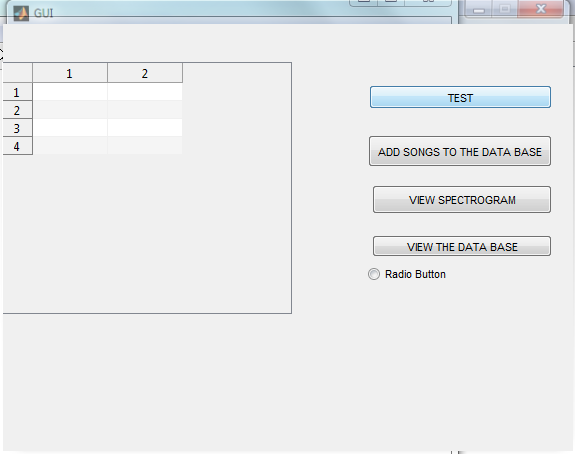

function varargout = GUI(varargin)
gui_Singleton = 1;
gui_State = struct('gui_Name', mfilename, ...
'gui_Singleton', gui_Singleton, ...
'gui_OpeningFcn', @GUI_OpeningFcn, ...
'gui_OutputFcn', @GUI_OutputFcn, ...
'gui_LayoutFcn', [] , ...
'gui_Callback', []);
if nargin && ischar(varargin{1})
gui_State.gui_Callback = str2func(varargin{1});
end
if nargout
[varargout{1:nargout}] = gui_mainfcn(gui_State, varargin{:});
else
gui_mainfcn(gui_State, varargin{:});
end
function GUI_OpeningFcn(hObject, eventdata, handles, varargin)
handles.output = hObject;
guidata(hObject, handles);
function varargout = GUI_OutputFcn(hObject, eventdata, handles)
varargout{1} = handles.output;
function TEST_Callback(hObject, eventdata, handles)
test1;
function pushbutton2_Callback(hObject, eventdata, handles)
DATABASE_CREATOR;
function pushbutton3_Callback(hObject, eventdata, handles)
function radiobutton1_Callback(hObject, eventdata, handles)
function pushbutton4_Callback(hObject, eventdata, handles)
